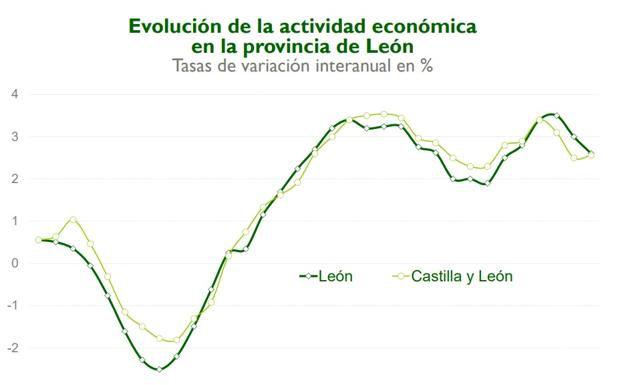

| Provincia | informacion | |
|---|---|---|
| Pagina Principal Leon Zamora Salamanca Valladolid Palencia Avila Palencia Segovia Soria Burgos |
Provincia de Leon
Localización : Noroeste de la Península Iberica Localidades Principales : Astorga Ponferrada Geografia de la proviencia : montañosa al norte y al oeste Historia : Historia de Leon Cultura : Cultura de Leon Naturaleza : Parajes Naturales Tradiciones : Tradiciones Otros Aspectos de Interes :  |